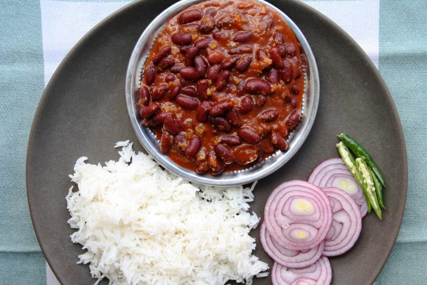

Rajma chawal
Rajma Chawal is a delicious main course recipe. It contain good quality of carbohydrate and protein that can suit your taste. This popular Punjabi cuisine is loved by people of all age groups. Rajma Chawal is perfect for a Sunday brunch or on a get-together with family and friends. It is cooked by using ingredients like rajma(kidney beans) rice, onions, tomatoes and melange of spices. So go ahead and try out this recipe and relish it with your near and dear ones.
how would you like it?
Ingredients of Rajma chawal
| Ingredient | Quantity |
|---|---|
| red kidney beans | 1 cup |
| large onion | 2 |
| ginger | 1 teaspoon |
| coriander powder | 1 tablespoon |
| powdered black pepper | 1 tablespoon |
| cinnamon stick | 1 |
| green cardamom | 2 |
| clove | 2 |
| mustard oil | 3 tablespoon |
| large tomato | 2 |
| rice | 1 cup |
| garlic | 1 tablespoon |
| green chilli | 2 chopped |
| cumin powder | 1 tablespoon |
| salt | as required |
| garam masala powder | 1 tablespoon |
| Black Cardamon | 1 |
| black pepper | 1 teaspoon |
| Ghee | 1 teaspoon |
Method of preparation
- Wash the rajma and allow it to soak in water overnight. Wash it again and pressure cook with 2 cups of water, salt and turmeric. Once the rajma is soft and squishy remove it from fire and keep it aside
- Finely chop onions and keep aside, grate the tomatoes and keep them aside. Make a paste of ginger,garlic and green chillies.
- In a deep bottomed pan, add oil, when it gets heated add green cardamom, black cardamom, cinnamon, clove, peppercorn. Once they become fragrant, add onions and cook till they are golden brown. Now add the tomatoes and cook on high for 4-5 minutes. Add ginger- garlic-chilli paste, cumin powder, coriander powder and black pepper powder. Cook till the spices become fragrant and oil starts leaving the sides of the pan. Now add the rajma and one cup of water. Mix well and cook covered for 10 minutes. Once done, add the ghee. You can garnish with coriander leaves. Your rajma is ready.
- To make a steamed rice, boil 1 cup rice with 5 cups of water. Once the rice is soft, strain and discard the water. Spread the rice on a plate and allow it to air for 2-3 minutes.